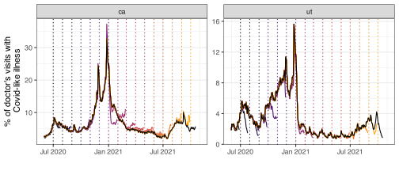

Let’s start with something familiar… Here’s a task for you:
Use pub_covidcast() to download JHU CSSE COVID-19 confirmed case data (confirmed_incidence_num) for CA, NC, and NY from March 1, 2022 to March 31, 2022 as of January 1, 2024.
Try this for yourself. Then click the dropdown on the next slide to check your work…
The select() function is used to pick specific columns from your dataset.
select(cases_df, geo_value, time_value) # Select the 'geo_value' and 'time_value' columns
# A tibble: 93 × 2
geo_value time_value
<chr> <date>
1 ca 2022-03-01
2 nc 2022-03-01
3 ny 2022-03-01
4 ca 2022-03-02
5 nc 2022-03-02
6 ny 2022-03-02
7 ca 2022-03-03
8 nc 2022-03-03
9 ny 2022-03-03
10 ca 2022-03-04
# ℹ 83 more rows
Selecting columns with select()
You can exclude columns by prefixing the column names with a minus sign -.
select(cases_df, -raw_cases) # Exclude the 'raw_cases' column from the dataset
# A tibble: 93 × 2
geo_value time_value
<chr> <date>
1 ca 2022-03-01
2 nc 2022-03-01
3 ny 2022-03-01
4 ca 2022-03-02
5 nc 2022-03-02
6 ny 2022-03-02
7 ca 2022-03-03
8 nc 2022-03-03
9 ny 2022-03-03
10 ca 2022-03-04
# ℹ 83 more rows
To convert data from long format to wide/messy format use pivot_wider().
For example, let’s try creating a column for each time value in cases_df:
messy_cases_df <- cases_df |>pivot_wider(names_from = time_value, # Create new columns for each unique datevalues_from = raw_cases # Fill those columns with the raw_case values )# View the resultmessy_cases_df
Use pivot_longer() to convert data from wide format (multiple columns for the same variable) to long format (one column per variable).
Let’s try turning messy_cases_df back into the original tidy cases_df!
tidy_cases_df <- messy_cases_df |>pivot_longer(cols =-geo_value, # Keep the 'geo_value' column as it isnames_to ="time_value", # Create a new 'time_value' column from the column namesvalues_to ="raw_cases"# Values from the wide columns should go into 'raw_cases' )# View the resulthead(tidy_cases_df, n =3) # Notice the class of time_value here
# A tibble: 3 × 3
geo_value time_value raw_cases
<chr> <chr> <dbl>
1 ca 2022-03-01 4310
2 ca 2022-03-02 7044
3 ca 2022-03-03 7509
Tidying messy data with pivot_longer()
When we used pivot_longer(), the time_value column is converted to a character class because the column names are treated as strings.
So, to truly get the original cases_df we need to convert time_value back to the Date class.
Then, we can use identical() to check if the two data frames are exactly the same.
# A tibble: 3 × 3
geo_value time_value raw_cases
<chr> <date> <dbl>
1 ca 2022-03-01 4310
2 nc 2022-03-01 1231
3 ny 2022-03-01 1487
Though note that what we’re going to do can be applied to the entirety of cases_df.
Load state census data
The state_census dataset from epidatasets contains state populations from the 2019 census.
# State census dataset from epidatasetslibrary(epidatasets)state_census = state_census |>select(abbr, pop) |>filter(abbr !="us")state_census |>head()
# A tibble: 6 × 2
abbr pop
<chr> <dbl>
1 al 4903185
2 ak 731545
3 az 7278717
4 ar 3017804
5 ca 39512223
6 co 5758736
Notice that this includes many states that are not in cases_df_sub.
Left Join: Keep all rows from the first dataset
A left join keeps all rows from the first dataset (cases_df_sub), and adds matching data from the second dataset (state_census).
So all rows from the first dataset (cases_df_sub) will be preserved.
The datasets are joined by matching the geo_value column, specified by the by argument.
# Left join: combining March 1, 2022 state case data with the census datacases_sub_left_join <- cases_df_sub |>left_join(state_census, join_by(geo_value == abbr))cases_sub_left_join
# A tibble: 3 × 4
geo_value time_value raw_cases pop
<chr> <date> <dbl> <dbl>
1 ca 2022-03-01 4310 39512223
2 nc 2022-03-01 1231 10488084
3 ny 2022-03-01 1487 19453561
Right Join: Keep all rows from the second dataset
A right join keeps all rows from the second dataset (state_census), and adds matching data from the first dataset (cases_df_sub).
If a row in the second dataset doesn’t have a match in the first, then the columns from the first will be filled with NA.
For example, can see this for the al row from state_census…
# Right join: keep all rows from state_censuscases_sub_right_join <- cases_df_sub |>right_join(state_census, join_by(geo_value == abbr))head(cases_sub_right_join)
# A tibble: 6 × 4
geo_value time_value raw_cases pop
<chr> <date> <dbl> <dbl>
1 ca 2022-03-01 4310 39512223
2 nc 2022-03-01 1231 10488084
3 ny 2022-03-01 1487 19453561
4 al NA NA 4903185
5 ak NA NA 731545
6 az NA NA 7278717
Inner Join: Only keep matching rows
An inner join will only keep rows where there is a match in both datasets.
So, if a state in state_census does not have a corresponding entry in cases_df_sub, then that row will be excluded.
# Inner join: only matching rows are keptcases_sub_inner_join <- cases_df_sub |>inner_join(state_census, join_by(geo_value == abbr))cases_sub_inner_join
# A tibble: 3 × 4
geo_value time_value raw_cases pop
<chr> <date> <dbl> <dbl>
1 ca 2022-03-01 4310 39512223
2 nc 2022-03-01 1231 10488084
3 ny 2022-03-01 1487 19453561
Full Join: Keep all rows from both datasets
A full join will keep all rows from both datasets.
If a state in either dataset has no match in the other, the missing values will be filled with NA.
# Full join: keep all rows from both datasetscases_sub_full_join <- cases_df_sub |>full_join(state_census, join_by(geo_value == abbr))head(cases_sub_full_join)
# A tibble: 6 × 4
geo_value time_value raw_cases pop
<chr> <date> <dbl> <dbl>
1 ca 2022-03-01 4310 39512223
2 nc 2022-03-01 1231 10488084
3 ny 2022-03-01 1487 19453561
4 al NA NA 4903185
5 ak NA NA 731545
6 az NA NA 7278717
An `epi_df` object, 6 x 6 with metadata:
* geo_type = state
* time_type = day
* as_of = 2024-01-01
# A tibble: 6 × 6
# Groups: geo_value [1]
geo_value time_value raw_cases pop scaled_cases smoothed_scaled_cases
* <chr> <date> <dbl> <dbl> <dbl> <dbl>
1 ca 2022-03-01 4310 39512223 10.9 10.9
2 ca 2022-03-02 7044 39512223 17.8 14.4
3 ca 2022-03-03 7509 39512223 19.0 15.9
4 ca 2022-03-04 3586 39512223 9.08 14.2
5 ca 2022-03-05 1438 39512223 3.64 12.1
6 ca 2022-03-06 6465 39512223 16.4 12.8
Epi. data processing with epiprocess
It is easy to produce an autoplot the smoothed confirmed daily cases for each geo_value:
case_rates_df |>autoplot(smoothed_scaled_cases)
Epi. data processing with epiprocess
Alternatively, we can display both the smoothed and the original daily case rates:
Now, before exploring some more features of epiprocess, let’s have a look at the epiverse software ecosystem it’s part of…
2 Epiverse Software Ecosystem
The epiverse ecosystem
Interworking, community-driven, packages for epi tracking & forecasting.
3 Panel and Versioned Data in the Epiverse
What is panel data?
Recall that panel data, or longitudinal data, contain cross-sectional measurements of subjects over time.
Built-in example: covid_case_death_rates dataset, which is a snapshot as of May 31, 2022 that contains daily state-wise measures of case_rate and death_rate for COVID-19 over 2021:
# A tibble: 6 × 4
geo_value time_value case_rate death_rate
<chr> <date> <dbl> <dbl>
1 ak 2020-12-31 35.9 0.158
2 al 2020-12-31 65.1 0.438
3 ar 2020-12-31 66.0 1.27
4 az 2020-12-31 76.8 1.10
5 ca 2020-12-31 96.0 0.751
6 co 2020-12-31 35.8 0.649
How do we store & work with such snapshots in the epiverse software ecosystem?
epi_df: Snapshot of a dataset
You can convert panel data into an epi_df with the required geo_value and time_value columns
Therefore, an epi_df is…
a tibble that requires columns geo_value and time_value.
additional keys to index (age_group, ethnicity, etc.)
epi_df
Represents a snapshot that contains the most up-to-date values of the signal variables, as of a given time.
epi_df: Snapshot of a dataset
Consider the same dataset we just encountered on JHU daily COVID-19 cases and deaths rates from all states as of May 31, 2022.
We can see that it meets the criteria epi_df (has geo_value and time_value columns) and that it contains additional metadata (i.e. geo_type, time_type, as_of, and other_keys).
edf |>head()
An `epi_df` object, 6 x 4 with metadata:
* geo_type = state
* time_type = day
* as_of = 2022-05-31
# A tibble: 6 × 4
geo_value time_value case_rate death_rate
* <chr> <date> <dbl> <dbl>
1 ak 2020-12-31 35.9 0.158
2 al 2020-12-31 65.1 0.438
3 ar 2020-12-31 66.0 1.27
4 as 2020-12-31 0 0
5 az 2020-12-31 76.8 1.10
6 ca 2020-12-31 96.0 0.751
Making locations commensurate (per capita scaling)
Correlating signals across location or time
Computing growth rates
Detecting and removing outliers
Dealing with revisions
Features - Correlations at different lags
The below plot addresses the question: “For each state, are case and death rates linearly associated across all days?”
To explore lagged correlations and how case rates associate with future death rates, we can use the dt1 parameter in epi_cor() to shift case rates by a specified number of days.
As expected, the peak growth rates for both states occurred during the January 2022 Omicron wave, reflecting the sharp rise in cases over that period.
Features - Outlier detection
The detect_outlr() function offers multiple outlier detection methods on a signal.
The simplest is detect_outlr_rm(), which works by calculating an outlier threshold using the rolling median and the rolling Interquartile Range (IQR) for each time point:
Threshold = Rolling Median ± (Detection Multiplier × Rolling IQR)
Note that the default number of time steps to use in the rolling window by default is 21 and is centrally aligned.
The detection multiplier default is 2 and controls how far away a data point must be from the median to be considered an outlier.
Several data points that deviate from the expected case cadence have been flagged as outliers, and may require further investigation.
However, the peak in Jan. 2022 has also been flagged as an outlier. This highlights the importance of manual inspection before correcting the data, as these may represent valid events (e.g., a genuine surge in cases).
epi_archive: Collection of epi_dfs
full version history of a data set
acts like a bunch of epi_dfs — but stored compactly
allows similar functionality as epi_df but using only data that would have been available at the time
Revisions
Epidemiology data gets revised frequently.
We may want to use the data as it looked in the past
or we may want to examine the history of revisions.
epi_archive: Collection of epi_dfs
Subset of daily COVID-19 doctor visits (Optum) and cases (JHU CSSE) from 6 states in `archive format:
archive_cases_dv_subset
→ An `epi_archive` object, with metadata:
ℹ Min/max time values: 2020-06-01 / 2021-11-30
ℹ First/last version with update: 2020-06-02 / 2021-12-01
ℹ Versions end: 2021-12-01
ℹ A preview of the table (129638 rows x 5 columns):
Key: <geo_value, time_value, version>
geo_value time_value version percent_cli case_rate_7d_av
<char> <Date> <Date> <num> <num>
1: ca 2020-06-01 2020-06-02 NA 6.628329
2: ca 2020-06-01 2020-06-06 2.140116 6.628329
3: ca 2020-06-01 2020-06-07 2.140116 6.628329
4: ca 2020-06-01 2020-06-08 2.140379 6.628329
5: ca 2020-06-01 2020-06-09 2.114430 6.628329
---
129634: tx 2021-11-26 2021-11-29 1.858596 7.957657
129635: tx 2021-11-27 2021-11-28 NA 7.174299
129636: tx 2021-11-28 2021-11-29 NA 6.834681
129637: tx 2021-11-29 2021-11-30 NA 8.841247
129638: tx 2021-11-30 2021-12-01 NA 9.566218
Revision patterns

Finalized data
Counts are revised as time proceeds
Want to know the final value
Often not available until weeks/months later
Forecasting
At time \(t\), predict the final value for time \(t+h\), \(h > 0\)
Backcasting
At time \(t\), predict the final value for time \(t-h\), \(h < 0\)
Nowcasting
At time \(t\), predict the final value for time \(t\)
Following week they revise the number upward (by ~25%) due to lagged reports.
Takeaway: Once the data is backfilled, hospitalizations rarely show a decline, challenging the common media narrative.
Backfill American edition
Again, we can see a similar systematic underestimation problem for COVID-19 morality rates in CA.
This plot also illustrates the revision process - how the reported mortality changes & increases across multiple updates until it stabilizes at the final value (black line).
These two examples show the problem and now we need a solution…
Nowcasting and its mathematical setup
Nowcasting: Predict a finalized value from a provisional value.
Suppose today is time \(t\)
Let \(y_i\) denote a series of interest observed at times \(i=1,\ldots, t\).
Our goal
Produce a point nowcast for the finalized values of \(y_t\).
Accompany with time-varying prediction intervals
We also have access to \(p\) other time series \(x_{ij},\; i=1,\ldots,t, \; j = 1,\ldots,p\)
All may be subject to revisions.
Aside on nowcasting
To some Epis, “nowcasting” can be equated with “estimate the time-varying instantaneous reproduction number, \(R_t\)”
Ex. using the number of reported COVID-19 cases in British Columbia between Jan. 2020 and Apr. 15, 2023.
Group built {rtestim} doing for this nonparametrically.
We may come back to this later…
5 Nowcasting with One Variable
Nowcasting simple ratio Ex: NCHS mortality
In this example, we’ll demonstrate the concept of nowcasting using NHCS mortality data. (the number of weekly new deaths with confirmed or presumed COVID-19, per 100,000 population).
We will work with provisional data (real-time reports) and compare them to finalized data (final reports).
The goal is to estimate or nowcast the mortality rate for weeks when only provisional data is available.
Fetch versioned data
Let’s fetch versioned mortality data from the API (pub_covidcast) for CA (geo_values = "ca") and the signal of interest (deaths_covid_incidence_num) over early 2024.
# Fetch the versioned NCHS mortality data (weekly)mortality_archive <-pub_covidcast(source ="nchs-mortality",signals ="deaths_covid_incidence_num",geo_type ="state",time_type ="week",geo_values ="ca", # California (CA)time_values =epirange(202401, 202413), issues ="*") |>select(geo_value, time_value, version = issue, mortality = value) |>as_epi_archive(compactify =TRUE)# Set the start and end days for the analysis # corresponding to the weeks entered in time_valuesstart_time =as.Date("2023-12-31")end_time =as.Date("2024-03-24")
Latency in reporting - Minimum lag
A quick inspection reveals that mortality rates are systematically 7 days latent (fixed lag).
mortality_revision_inspect = mortality_archive$DT |>mutate(version_time_diff = version - time_value)# Look at the first revision for each weekmortality_revision_inspect |>group_by(time_value) |>slice(1) |>head()
# A tibble: 6 × 5
# Groups: time_value [6]
geo_value time_value version mortality version_time_diff
<chr> <date> <date> <dbl> <drtn>
1 ca 2023-12-31 2024-01-07 48 7 days
2 ca 2024-01-07 2024-01-14 28 7 days
3 ca 2024-01-14 2024-01-21 47 7 days
4 ca 2024-01-21 2024-01-28 41 7 days
5 ca 2024-01-28 2024-02-04 31 7 days
6 ca 2024-02-04 2024-02-11 47 7 days
Use revision_summary() from epiprocess to generate basic statistics about the revision behavior for the dataset.
Latency in reporting - Finalized value attainment
Question: When is the finalized value first attained for each date? Would we have access to any in real-time?
How fast are the final values attained & what’s the pattern for these times, if any?
# A tibble: 6 × 4
geo_value time_value min_version diff
<chr> <date> <date> <drtn>
1 ca 2023-12-31 2024-10-13 287 days
2 ca 2024-01-07 2024-10-27 294 days
3 ca 2024-01-14 2024-06-09 147 days
4 ca 2024-01-21 2024-08-11 203 days
5 ca 2024-01-28 2024-07-07 161 days
6 ca 2024-02-04 2024-10-13 252 days
And here’s a numerical summary:
Min. 1st Qu. Median Mean 3rd Qu. Max.
84.0 147.0 189.0 192.8 259.0 294.0
Conclusion: Tends to take a long time & varies. Even for this relatively small time period… Goes as low as 84 days or as high as 294 days. Yikes.
So if we were doing this in real-time, then we wouldn’t have access to the finalized data.
Comparison of final vs. multiple revisions
This shows the finalized rates in comparison to multiple revisions to see how the data changes over time:
Comparison of final vs. one revision
The below figure compares the finalized rates (in black) to one revision (in yellow) from March 3, 2024.
The real-time data is biased downwards (systematically below the true value). That is, the signal tends to get scaled up with future revisions.
Calculate one ratio: Provisional vs. finalized data
Suppose that the day is March 10, 2024. Then, because the data is 7 days latent, we can compute the ratio between provisional and finalized data for March 3, 2024.
as_of_date =as.Date("2024-03-10"); fixed_lag =7# Load the finalized mortality data for CAca_finalized <- mortality_latest |>filter(time_value == (as_of_date - fixed_lag)) |> dplyr::select(mortality)# Load the provisional mortality data for the same weekmortality_old =epix_as_of(mortality_archive, as_of_date)ca_provisional <- mortality_old |>filter(time_value == (as_of_date - fixed_lag)) |> dplyr::select(mortality)# Calculate ratio between provisional and finalized cases for the week of interestratio <- ca_provisional$mortality / ca_finalized$mortalityratio
[1] 0.3611111
Conclusion: The real-time rate is well below the finalized for this time (26 vs 72 here).
Question: Can we generalize this over many days?
Calculating the ratio using multiple dates
Let’s move from calculating the ratio by using one day to multiple days with the goal to use it to nowcast for Feb. 18, which has a provisional value of 23
First, let’s download the real-time rates for CA, and compare them to their finalized version.
dates <-seq(start_time, (as_of_date -7), by ="day")mortality_real_time <-function(date) {epix_as_of(mortality_archive, date +7) |>filter(time_value == date)}mortality_real_time_df <-map_dfr(dates, mortality_real_time)head(mortality_real_time_df)
An `epi_df` object, 6 x 3 with metadata:
* geo_type = state
* time_type = day
* as_of = 2024-01-07
# A tibble: 6 × 3
geo_value time_value mortality
* <chr> <date> <dbl>
1 ca 2023-12-31 48
2 ca 2024-01-07 28
3 ca 2024-01-14 47
4 ca 2024-01-21 41
5 ca 2024-01-28 31
6 ca 2024-02-04 47
Calculating the ratio using multiple dates
Now, let’s plot the real-time vs the finalized mortality rates:
Takeaways: The real-time counts are biased well below the finalized counts.
Systematic underreporting tends to lessen over time (the gap between the lines decreases).
Realistic limitation of nowcasting - Finalized data
Recall that real-time access to finalized data is limited as finalized values can take months to report (e.g., Jan. 7 is finalized 294 days later).
To nowcast accurately, we must rely on the best available approximation of finalized data at the time of estimation (Feb. 25).
Min. 1st Qu. Median Mean 3rd Qu. Max.
0.1530 0.2317 0.2500 0.2565 0.2688 0.3917
On average, the real-time rates are ~25.7% of the finalized.
Tells us the distribution is right-skewed (mean > median) and so we should opt for the median.
Nowcasting on Feb. 25
Since the median ratio between real-time and finalized values is 0.250 (i.e., real-time values are typically 25% of the finalized), then the nowcast is
# Now we can nowcast properly:nowcast <- provisional *1/median(ratio_real_time_to_feb25)nowcast
[1] 92
To get the accompanying 95% prediction interval, calculate the 2.5th and 97.5th percentiles:
Visualize nowcast, real-time, and finalized values
Finally, we can compare these nowcast results to the real-time and finalized values:
The real-time counts tend to be biased below the finalized counts. Nowcasted values tend to provide a much better approximation of the truth (at least for these dates).
Evaluation using MAE
Assume we have prediction \(\hat y_{t}\) for the provisional value at time \(t\).
Then for \(y_{t}\) over times \(t = 1, \dots, N\), then we may compute error metrics like mean absolute error (MAE).
MAE measures the average absolute difference between the nowcast and finalized values.
We’ll merge the symptom search trends (x1, x2) with hospital admissions data (y) using epix_merge() from epiprocess.
This allows us to match data by time and geography, & fill any missing values with the most recent observation (LOCF).
Linear Model: A simple approach for nowcasting
Aside from ratios, one of the simplest approach to nowcasting is to use a linear regression model.
We model the relationship between provisional (predictor) data and response data.
This model helps us make predictions for the finalized data based on the current (provisional) signals.
Linear regression
Goal: Estimate the coefficients \(\beta_0\) and \(\beta_1\) that describe the relationship between the predictor \(x_i\) and the outcome \(y_i\).
Linear Model: The relationship is assumed to be:
\[y_i \approx \beta_0 + \beta_1 x_i \]
where \(\beta_0\) is the intercept, \(\beta_1\) is the slope.
In R: Use lm(y ~ x) to estimate the coefficients, where y is the outcome variable and x is the predictor.
Multiple linear regression
Goal: Estimate coefficients \(\beta_0, \beta_1, \dots, \beta_p\) that describe the relationship between multiple predictors \(x_{i1}, x_{i2}, \dots, x_{ip}\) and the outcome \(y_i\).
where: \(\beta_0\) is the intercept, \(\beta_1, \dots, \beta_p\) are the coefficients.
In R: Use lm(y ~ x1 + x2 + ... + xp) to estimate the coefficients, where y is the outcome and x1, x2, ..., xp are the predictors.
Multiple linear regression model
A linear model is a good choice to describe the relationship between search trends and hospital admissions.
The model will include two predictors (s01 and s02).
We’ll use these two search trend signals to predict hospital admissions (response).
Multiple linear regression model
# Define the function for lm model fit and predictionlm_mod_pred <-function(data, gk, rtv, ...) {# Fit the linear model model <-lm(admissions ~ avg_search_vol_s01 + avg_search_vol_s02, data = data)# Make predictions predictions =predict(model,newdata = data |># Use tidyr::fill() for LOCF if predictor data is incomplete fill(avg_search_vol_s01, .direction ="down") |>fill(avg_search_vol_s02, .direction ="down") |>filter(time_value ==max(time_value)),interval ="prediction", level =0.9 )# Pull off true time value for comparison to target real_time_val = data |>filter(time_value ==max(time_value)) |>pull(admissions)return(data.frame(predictions, actual_nowcast_date =max(data$time_value), real_time_val = real_time_val))}
Note that this code is intentionally simple; while it can be refined to handle cases like negatives or other boundary conditions, we aim to avoid unnecessary complexity.
Nowcasting with epix_slide()
We will use epix_slide() to create a sliding window of training data.
The model will be trained on a 14-day window before the target date, and predictions will be made for the target date.
The beauty of this function is that it is version-aware - the sliding computation at any given reference time t is performed on data that would have been available as of t automatically.
Nowcasting with epix_slide()
# Define the reference time points for nowcastingtargeted_nowcast_dates <-seq(as.Date("2023-04-15"), as.Date("2023-06-15"), by ="1 week")ref_time_values = targeted_nowcast_dates +2# Adjust for the systematic 2-day latency in the response# Determine this from revision_summary(y1, print_inform = TRUE) # Perform nowcasting using epix_slidenowcast_res <- archive |>group_by(geo_value) |>epix_slide(.f = lm_mod_pred,.before =14, # 14-day training period.versions = ref_time_values, .new_col_name ="res" ) |>unnest() |># Nesting creates a list-column of data frames; unnesting flattens it back out into regular columns. mutate(targeted_nowcast_date = targeted_nowcast_dates, time_value = actual_nowcast_date) |>ungroup()# View resultshead(nowcast_res, n=2)
# A tibble: 2 × 9
geo_value version fit lwr upr actual_nowcast_date real_time_val
<chr> <date> <dbl> <dbl> <dbl> <date> <dbl>
1 ga 2023-04-17 4.64 -0.122 9.39 2023-04-15 4
2 ga 2023-04-24 7.36 1.56 13.2 2023-04-22 4
# ℹ 2 more variables: targeted_nowcast_date <date>, time_value <date>
Compare with the actual admissions
After making predictions, we compare them to the actual hospital admissions.
# Left join with latest results # Latest snapshot of data (with the latest/finalized admissions)x_latest <-epix_as_of(archive, max(archive$DT$version)) |>select(-c(avg_search_vol_s01, avg_search_vol_s02))res <- nowcast_res |>left_join(x_latest, by =join_by(geo_value, time_value))head(res)
# A tibble: 6 × 10
geo_value version fit lwr upr actual_nowcast_date real_time_val
<chr> <date> <dbl> <dbl> <dbl> <date> <dbl>
1 ga 2023-04-17 4.64 -0.122 9.39 2023-04-15 4
2 ga 2023-04-24 7.36 1.56 13.2 2023-04-22 4
3 ga 2023-05-01 6.06 1.57 10.5 2023-04-29 5
4 ga 2023-05-08 5.01 1.28 8.74 2023-05-06 6
5 ga 2023-05-15 8.14 5.69 10.6 2023-05-11 8
6 ga 2023-05-22 3.43 -2.35 9.21 2023-05-20 4
# ℹ 3 more variables: targeted_nowcast_date <date>, time_value <date>,
# admissions <dbl>
Visualizing the nowcast results
We can then visualize the nowcast results alongside the true values using ggplot2:
Evaluation using MAE
As before, we can evaluate our point nowcasts numerically using MAE.
# Calculate the absolute error between actual and nowcasted valuesmae_data_admissions <- res |>mutate(nc_abs_error =abs(admissions - fit), # Nowcast vs Finalized admissionsrt_abs_error =abs(admissions - real_time_val)) # Real-Time vs Finalized admissions# Compute the MAE (mean of absolute errors)mae_value_admissions <- mae_data_admissions |>summarise(nc_MAE =mean(nc_abs_error),rt_MAE =mean(rt_abs_error))knitr::kable(mae_value_admissions)
nc_MAE
rt_MAE
1.180965
2.333333
Based off of comparing these simple error measures, the nowcast MAE is clearly better.
Evaluation using MAE
However, when we visualize the distribution of errors across time, it is not so cut-and-dry:
The main driver behind the real-time MAE being greater is the “outlier-like” May 25 AE.
So visualizing can provide an important perspective that is missed from a simple numerical summary of error.
Key Takeaways: Linear regression nowcasting example
Provisional Data as Predictors: Using Google symptom search trends to predict influenza hospital admissions.
Simple Linear Model: A linear regression model captures the relationship between symptom searches and hospital admissions.
Actionable Predictions: Nowcasts provide timely insights for hospital admissions, even before data is finalized.
Sliding Window Approach: Predictions are based on data up to the current time, ensuring no future information influences the nowcast.
Evaluation: Predictions are compared with actual admissions using numerical and visual perspectives.
7 Case Study - Nowcasting Cases Using %CLI
Goal of this case study
Goal: Nowcast COVID-19 Cases for MA using the estimated percentage of COVID-related doctor’s visits (%CLI), based on outpatient data from Optum.
%CLI is contained in the Epidata API.
Cases by specimen collection date are not. They are from the MA gov website.
Cases in the API (JHU) are aligned by report date, not specimen collection/test date.
Working with cases aligned by test date allows us to avoid the more unpredictable delays introduced by the report date.
Summary of main steps
The workflow is similar to the previous example where we nowcasted using two variables, only more involved. The main steps are…
Fetch Data: Retrieve %CLI and COVID-19 case data (by specimen collection date) for MA.
Merge Data: Align %CLI and case data using epix_merge, filling missing values via last observation carried forward (LOCF).
Model & Prediction: Fit a linear model to predict cases based on %CLI, trained on a 30-day rolling window.
Nowcast Execution: Use epix_slide to nowcast the cases dynamically.
Visualization: Plot actual vs. nowcasted cases with confidence intervals to assess model accuracy.
So the first step is to fetch the data…
Construct an epi_archive from scratch
Here’s the archive of COVID-19 case excel files from the MA gov website, which we’ll use to construct our own epi_archive.
Brief summary of this data:
First release: Raw .xlsx data was first released early January 2021.
Change in reporting: Starting July 1, 2021, the dashboard shifted from 7 days/week to 5 days/week (Monday-Friday).
Friday, Saturday, and Sunday data is included in the Monday dashboard.
When Monday is a holiday, the Friday through Monday data is posted on Tuesday.
Construct an epi_archive from scratch
Purpose: To create an epi_archive object for storing versioned time series data.
Required Columns:
geo_value: Geographic data (e.g., region).
time_value: Time-related data (e.g., date, time).
version: Tracks when the data was available (enables version-aware forecasting).
Constructor:
new_epi_archive(): For manual construction of epi_archive (assumes validation of inputs).
Recommended Method:
as_epi_archive(): Simplifies the creation process, ensuring proper formatting and validation. We’ll use this one when we download some data from the MA gov website!
Main steps to construct the epi_archive
Load necessary Libraries: Such as tidyverse, readxl, epiprocess.
Process Each Date’s Data:
A function we’ll make (process_covid_data) downloads and processes daily COVID-19 data from the MA gov Excel files on their website.
The data is cleaned and formatted with columns: geo_value, time_value, version, and values.
Handle Missing Data: Checks if a date’s data is available (handle 404 errors).
Create epi_archive:
Combine processed data into a tibble.
Convert the tibble to an epi_archive object using as_epi_archive().
Fetch Data - Code for one date
# Load required librarieslibrary(tidyverse)library(readxl)library(httr)library(tibble)library(epiprocess)# Function to download and process each Excel file for a given dateprocess_covid_data <-function(Date) {# Generate the URL for the given date url <-paste0("https://www.mass.gov/doc/covid-19-raw-data-", tolower(gsub("-0", "-", format(Date, "%B-%d-%Y"))), "/download") # Applies gsub("-0", "-", ...) to replace any occurrence of -0 (such as in "April-01") with just - (resulting in "April-1").# Check if the URL exists (handle the 404 error by skipping that date) response <-GET(url)if (status_code(response) !=200) {return(NULL) # Skip if URL doesn't exist (404) }# Define the destination file path for the Excel file file_path <-tempfile(fileext =".xlsx")# Download the Excel fileGET(url, write_disk(file_path, overwrite =TRUE))# Read the relevant sheet from the Excel file data <-read_excel(file_path, sheet ="CasesByDate (Test Date)")# Process the data: rename columns and convert Date data <- data |>rename(Date =`Date`,Positive_Total =`Positive Total`,Positive_New =`Positive New`,Case_Average_7day =`7-day confirmed case average` ) |>mutate(Date =as.Date(Date)) # Convert to Date class# Create a tibble with the required columns for the epi_archive tib <-tibble(geo_value ="ma", # Massachusetts (geo_value)time_value = data$Date, # Date from the dataversion = Date, # The extracted version datecase_rate_7d_av = data$Case_Average_7day # 7-day average case value )return(tib)}
Fetch Data - Code breakdown
This purpose of this function is to download and process each Excel file as of a date.
URL Creation: Dynamically generates the URL based on the date, removing leading zeros in day values (e.g., “April-01” → “April-1”).
Check URL: Sends a request (GET(url)) and skips the date if the URL returns a non-200 status (e.g., 404 error).
Download File: Saves the Excel file to a temporary path using tempfile() and GET().
Read Data: Loads the relevant sheet (“CasesByDate”) from the Excel file using read_excel().
Tibble Creation: Constructs a tibble with geo_value, time_value, version, and case_rate_7d_av to later compile into an epi_archive (you can think of an epi_archive as being a comprised of many epi_dfs).
Fetch Data - Process eange of dates
Note that process_covid_data() works on one date at a time.
So now, we need a function that iterates over a date range and applies process_covid_data() to each date & combines the resulting tibbles into an epi_archive.
We call this function process_data_for_date_range()…
Fetch Data - Process range of dates
# Function to process data for a range of datesprocess_data_for_date_range <-function(start_date, end_date) {# Generate a sequence of dates between start_date and end_date date_sequence <-seq(as.Date(start_date), as.Date(end_date), by ="day")# Process data for each date and combine results covid_data_list <-lapply(date_sequence, function(Date) {process_covid_data(Date) # Skip over dates with no data (NULLs will be ignored) })# Combine all non-null individual tibbles into one data frame combined_data <-bind_rows(covid_data_list[!sapply(covid_data_list, is.null)])# Convert the combined data into an epi_archive objectif (nrow(combined_data) >0) { epi_archive_data <- combined_data |>as_epi_archive(compactify =FALSE)return(epi_archive_data) } else {message("No valid data available for the given date range.")return(NULL) }}
Fetch Data - Code breakdown
Here’s a summary of what process_data_for_date_range() does: 1. Generates Date Range: Creates a sequence of dates between start_date and end_date.
Processes Data: Applies the process_covid_data function to each date in the range (skip over dates with no data).
Combines Results: Combines all valid (non-NULL) tibbles into one single data frame.
Creates epi_archive: Converts the combined data into an epi_archive object.
Fetch Data - Run the function & inspect archive
Now, let’s run the function & inspect the resulting epi_archive of 7-day avg. COVID-19 case counts:
Expect building the archive to some time (enough for a cup of coffee or to meditate on life).
# Example usage: process data between Jan. 10, 2021, and Dec. 1, 2021y <-process_data_for_date_range("2021-01-10", "2021-12-01") # Raw .xlsx data is first released on Jan. 4, 2021y
→ An `epi_archive` object, with metadata:
ℹ Min/max time values: 2020-01-29 / 2021-11-30
ℹ First/last version with update: 2021-01-10 / 2021-12-01
ℹ Versions end: 2021-12-01
ℹ A preview of the table (135549 rows x 4 columns):
Key: <geo_value, time_value, version>
geo_value time_value version case_rate_7d_av
<char> <Date> <Date> <num>
1: ma 2020-01-29 2021-01-10 NA
2: ma 2020-01-29 2021-01-11 NA
3: ma 2020-01-29 2021-01-12 NA
4: ma 2020-01-29 2021-01-13 NA
5: ma 2020-01-29 2021-01-14 NA
---
135545: ma 2021-11-28 2021-11-30 2196.000
135546: ma 2021-11-28 2021-12-01 2352.286
135547: ma 2021-11-29 2021-11-30 1735.714
135548: ma 2021-11-29 2021-12-01 2371.286
135549: ma 2021-11-30 2021-12-01 1972.143
Alternatively, you may run the following to load y that was previously saved as an RDS file:
Comes pre-smoothed in time using a Gaussian linear smoother
This will be the predictor when we nowcast COVID-19 cases in MA.
# Step 1: Fetch Versioned Data x <-pub_covidcast(source ="doctor-visits",signals ="smoothed_adj_cli",geo_type ="state",time_type ="day",geo_values ="ma", # Just for MA to keep it simple (& to go with the case data by test date for that state)time_values =epirange(20210301, 20211231),issues =epirange(20210301, 20211231)) |>select(geo_value, time_value,version = issue,percent_cli = value ) |>as_epi_archive(compactify =FALSE)
Use epix_merge() to merge the two archives
Now we’ll use epix_merge() to combine the two epi_archives that share the same geo_value & time_value.
→ An `epi_archive` object, with metadata:
ℹ Min/max time values: 2020-01-29 / 2021-12-13
ℹ First/last version with update: 2021-01-10 / 2021-12-17
ℹ Versions end: 2021-12-17
ℹ A preview of the table (139190 rows x 5 columns):
Key: <geo_value, time_value, version>
geo_value time_value version percent_cli case_rate_7d_av
<char> <Date> <Date> <num> <num>
1: ma 2020-01-29 2021-01-10 NA NA
2: ma 2020-01-29 2021-01-11 NA NA
3: ma 2020-01-29 2021-01-12 NA NA
4: ma 2020-01-29 2021-01-13 NA NA
5: ma 2020-01-29 2021-01-14 NA NA
---
139186: ma 2021-12-11 2021-12-16 2.306966 NA
139187: ma 2021-12-11 2021-12-17 2.281141 NA
139188: ma 2021-12-12 2021-12-16 2.333759 NA
139189: ma 2021-12-12 2021-12-17 2.369756 NA
139190: ma 2021-12-13 2021-12-17 2.256551 NA
Fitting and predicting with linear model
Define lm_mod_pred(): A function that fits a linear model to forecast cases based on the percent_cli predictor.
Use predict() with a 90% prediction interval.
Save the actual cases to compare to the nowcasts later.
lm_mod_pred <-function(data, ...) {# Linear model model <-lm(case_rate_7d_av ~ percent_cli, data = data)# Make predictions predictions =predict(model,newdata = data |>fill(percent_cli, .direction ="down") |>filter(time_value ==max(time_value)),interval ="prediction", level =0.9)# Pull off real-time value for later comparison to the nowcast value real_time_val = data |>filter(time_value ==max(time_value)) |>pull(case_rate_7d_av)# Could clip predictions and bounds at 0return(data.frame(predictions, actual_nowcast_date =max(data$time_value), real_time_val = real_time_val)) }
Nowcasting with epix_slide()
Specify targets: Define the target dates for nowcasting (e.g., 1st of each month) & adjust training data to include the lag for the latent case data.
Sliding window: Use epix_slide() to apply the linear model across a sliding window of data for each region.
Training-test split: Use the last 30 days of data to train and predict cases for each target nowcast date.
Nowcasting with epix_slide()
# Define the reference time points (to give the training/test split)targeted_nowcast_dates <-seq(as.Date("2021-04-01"), as.Date("2021-11-01"), by ="1 month") ref_time_values = targeted_nowcast_dates +1# + 1 because the case data is 1 day latent. # Determine this from revision_summary(y)# Use epix_slide to perform the nowcasting with a training-test splitnowcast_res <- archive |>group_by(geo_value) |>epix_slide(.f = lm_mod_pred, # Pass the function defined above.before =30, # Training period of 30 days.versions = ref_time_values, # Determines the day where training data goes up to (not inclusive).new_col_name ="res" ) |>unnest() |>mutate(targeted_nowcast_date = targeted_nowcast_dates,time_value = actual_nowcast_date)# Take a peek at the resultshead(nowcast_res, n =1)
# A tibble: 1 × 9
# Groups: geo_value [1]
geo_value version fit lwr upr actual_nowcast_date real_time_val
<chr> <date> <dbl> <dbl> <dbl> <date> <dbl>
1 ma 2021-04-02 2114. 1975. 2254. 2021-04-01 1556.
# ℹ 2 more variables: targeted_nowcast_date <date>, time_value <date>
Visualizing nowcasts vs. actual values
Merge the nowcast results with the latest data for more direct comparison:
x_latest <-epix_as_of(archive, max(archive$DT$version)) |>select(-percent_cli) res <- nowcast_res |>left_join(x_latest, by =join_by(geo_value, time_value))res
# A tibble: 8 × 10
# Groups: geo_value [1]
geo_value version fit lwr upr actual_nowcast_date real_time_val
<chr> <date> <dbl> <dbl> <dbl> <date> <dbl>
1 ma 2021-04-02 2114. 1975. 2254. 2021-04-01 1556.
2 ma 2021-05-02 1083. 851. 1316. 2021-05-01 869.
3 ma 2021-06-02 353. 164. 541. 2021-06-01 117.
4 ma 2021-07-02 57.1 11.3 103. 2021-07-01 59
5 ma 2021-08-02 513. 284. 742. 2021-08-01 572.
6 ma 2021-09-02 1207. 888. 1527. 2021-09-01 1099.
7 ma 2021-10-02 1575. 1357. 1793. 2021-09-30 1069
8 ma 2021-11-02 1299. 1257. 1340. 2021-11-01 891.
# ℹ 3 more variables: targeted_nowcast_date <date>, time_value <date>,
# case_rate_7d_av <dbl>
Visualizing nowcasts vs. actual values
Now, plot the predictions & real-time values on top of latest COVID-19 cases using ggplot2:
Evaluation using MAE
Finally, we numerically evaluate our nowcasts using MAE.
Shows that the nowcast errors are lower than those of the real-time estimates.
# Calculate the absolute error between actual and nowcasted COVID-19 casesmae_data_cases <- res |>mutate(nc_abs_error =abs(case_rate_7d_av - fit), # Nowcast vs Finalized cases (7-day average)rt_abs_error =abs(case_rate_7d_av - real_time_val)) # Real-Time vs Finalized cases# Compute the MAE (mean of absolute errors)mae_value_cases <- mae_data_cases |>summarise(nc_MAE =mean(nc_abs_error),rt_MAE =mean(rt_abs_error))knitr::kable(mae_value_cases)
geo_value
nc_MAE
rt_MAE
ma
152.5013
228.5357
Evaluation using MAE
The elevated errors at both ends highlight periods where the discrepancies between the real-time and nowcast estimates are most pronounced.
Takeaways
Goal: Predict COVID-19 cases using %CLI, overcoming delays in report data.
Main Steps:
Fetch Data: Collect case and %CLI data.
Merge Data: Align datasets with epix_merge() and fill missing values.
Model: Fit a linear model to predict cases.
Nowcast: Apply dynamic forecasting with epix_slide().
Evaluate: Calculate error measures and numerically and visually assess the results.
Overall, nowcasting, based on the linear model, provided a closer approximation of true cases compared to the real-time values.